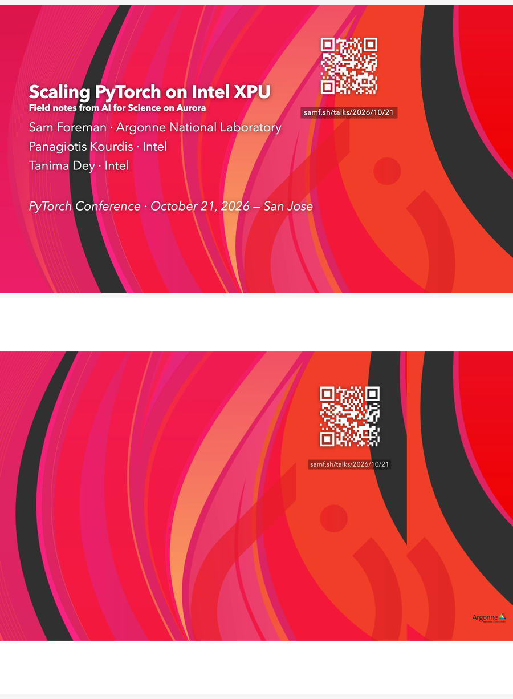
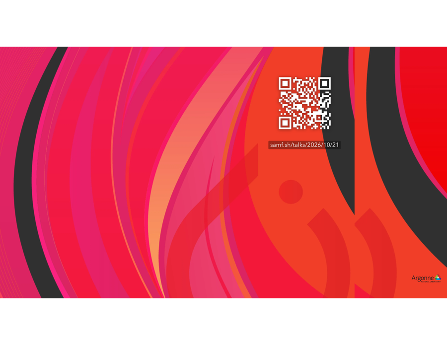
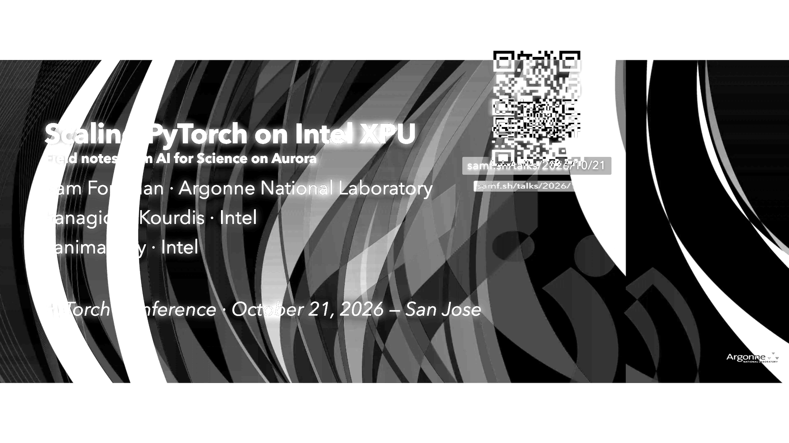

samf.sh/…
Rect(475,249,603,264) — the old per-line rect 35,98,451,152 fill #000 shadow boxes are gone (0).
#ffffff AvenirNext on wave; no duplicated span at 0.75pt. Download the real file: a3653bc.pdf (also copied to mbpr:~/Downloads/).
0 1px 12px oklch(0 0 /0.55) halo (screen only; stripped in print) and wave downscale from 3840×2160 webp.background-image bg.webp<img class="title-wave"> + print-color-adjust:exact; shadow removed in both @media print and slides-print-modefixed → absolute right:2ch bottom:0.8lh in print + slides-print-mode (was losing its main layer when main went static)puppeteer → keyboard.press('p') → page.pdf({printBackground:true}) → fitz get_drawings()open http://localhost:4321/talks/2026/10/21/#1
node (puppeteer): page.keyboard.press('p') → body.slides-print-mode:true → page.pdf({printBackground:true, format:'Letter'})
python -I: fitz.open('a3653bc.pdf')[0].get_pixmap(dpi=120).save('a3653bc-p1.png'); get_drawings() → 1 black rect (QR pill) not N shadow rects
pasted_content e1d6 (GPT-6.1 Astra) scale/terminology notes triaged separately — not in this commit